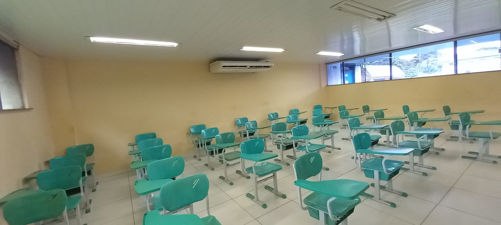
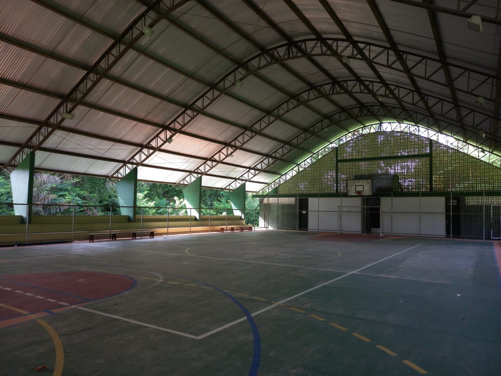
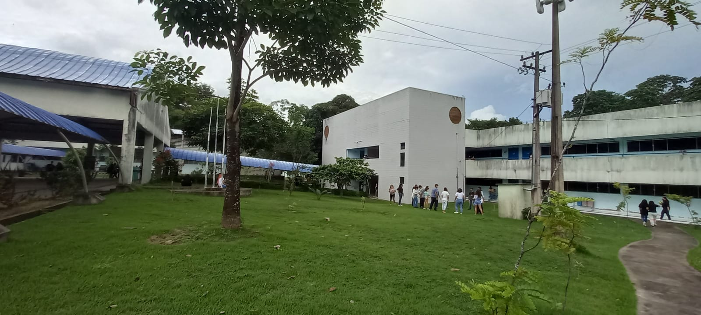
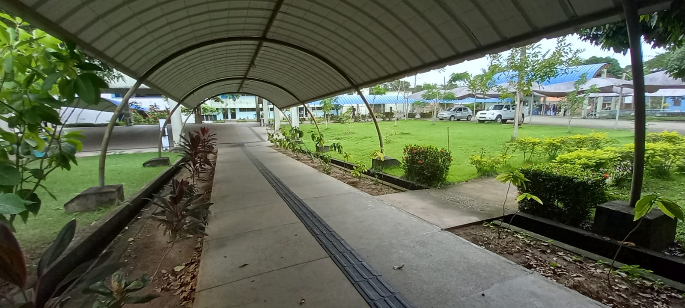

Componente Curricular do Aluno e as Salas de Aula das Disciplinas
Nessa área do sistema é informado as disciplinas que o aluno possuí as salas que devem acontecer as aulas e os professores de cada matéria.
| Artes II-B |
Sala 10 |
Jõao de Deus |
| Educação Física II-B |
Salão de Eventos ou Quadra |
Rosângela Oliveira |
| Filosofia II-A |
Sala 10 |
Helison Barros |
Geografia II-A |
Sala 10 |
Aldo Sousa |
Geografia III-A |
Sala 10 |
Aldo Sousa |
História III-A |
Sala 10 |
Fernando Lobato |
Interação Homem-Computador |
Sala de Informática |
|
Língua Estrangeira II-B |
Sala 10 |
|
Língua Portuguesa III-A |
Sala 10 |
Jessiana Barboza |
Organização e Normas do Trabalho |
Sala 10 |
|
Programação WEB I |
Laboratório de Informática |
Walbert Cunha |
Química II-A |
Sala 10 |
Gisele Ramos |
Sistemas Operacionais |
Laboratório de Informática |
Denis Carmuça |
Sociologia II-B |
Sala 10 |
Tuany Moura |
Sala de Aula
Quadra
Lab. de Informática
Salão de Eventos



